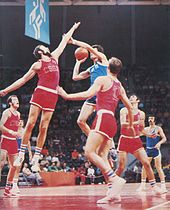

Sports Euphoria
Sports EuphoriaBasketball
 Basketball is a team sport, the objective being to shoot a ball through a basket horizontally positioned to score points while following a set of rules. Usually, two teams of five players play on a marked rectangular court with a basket at each width end. Basketball is one of the world's most popular and widely viewed sports.[1]
A regulation basketball hoop consists of a rim 18 inches (46 cm) in diameter and 10 feet (3.0 m) high mounted to a backboard. A team can score a field goal by shooting the ball through the basket during regular play. A field goal scores two points for the shooting team if a player is touching or closer to the basket than the three-point line, and three points (known commonly as a 3 pointer or three) if the player is behind the three-point line. The team with the most points at the end of the game wins, but additional time (overtime) may be issued when the game ends with a draw. The ball can be advanced on the court by bouncing it while walking or running (dribbling) or throwing (passing) it to a team mate. It is a violation to move without dribbling the ball (travelling), to carry it, or to hold the ball with both hands then resume dribbling (double dribble).
Numerous violations are called "fouls." Disruptive physical contact (a personal foul) is penalized, and a free throw is usually awarded to an offensive player if he is fouled while shooting the ball. A technical foul may also be issued when certain infractions occur, most commonly for unsportsmanlike conduct on the part of a player or coach. A technical foul gives the opposing team a free throw, and the opposing team is also retained possession of the ball.
Basketball has evolved many commonly used techniques of shooting, passing, dribbling, and rebounding, as well as specialized player positions and offensive and defensive structures (player positioning) and techniques. Typically, the tallest members of a team will play "center", "power forward" or "small forward" positions, while shorter players or those who possess the best ball handling skills and speed play "point guard" or "shooting guard".
While competitive basketball is carefully regulated, numerous variations of basketball have developed for casual play. Competitive basketball is primarily an indoor sport played on a carefully marked and maintained basketball court, but less regulated variations are often played outdoors in both inner city and remote areas.
Basketball is a team sport, the objective being to shoot a ball through a basket horizontally positioned to score points while following a set of rules. Usually, two teams of five players play on a marked rectangular court with a basket at each width end. Basketball is one of the world's most popular and widely viewed sports.[1]
A regulation basketball hoop consists of a rim 18 inches (46 cm) in diameter and 10 feet (3.0 m) high mounted to a backboard. A team can score a field goal by shooting the ball through the basket during regular play. A field goal scores two points for the shooting team if a player is touching or closer to the basket than the three-point line, and three points (known commonly as a 3 pointer or three) if the player is behind the three-point line. The team with the most points at the end of the game wins, but additional time (overtime) may be issued when the game ends with a draw. The ball can be advanced on the court by bouncing it while walking or running (dribbling) or throwing (passing) it to a team mate. It is a violation to move without dribbling the ball (travelling), to carry it, or to hold the ball with both hands then resume dribbling (double dribble).
Numerous violations are called "fouls." Disruptive physical contact (a personal foul) is penalized, and a free throw is usually awarded to an offensive player if he is fouled while shooting the ball. A technical foul may also be issued when certain infractions occur, most commonly for unsportsmanlike conduct on the part of a player or coach. A technical foul gives the opposing team a free throw, and the opposing team is also retained possession of the ball.
Basketball has evolved many commonly used techniques of shooting, passing, dribbling, and rebounding, as well as specialized player positions and offensive and defensive structures (player positioning) and techniques. Typically, the tallest members of a team will play "center", "power forward" or "small forward" positions, while shorter players or those who possess the best ball handling skills and speed play "point guard" or "shooting guard".
While competitive basketball is carefully regulated, numerous variations of basketball have developed for casual play. Competitive basketball is primarily an indoor sport played on a carefully marked and maintained basketball court, but less regulated variations are often played outdoors in both inner city and remote areas.
History
Creation
In early December 1891, Canadian American Dr. James Naismith,[2] a physical education professor and instructor at the International Young Men's Christian Association Training School[3] (YMCA) (today, Springfield College) in Springfield, Massachusetts, USA), was trying to keep his gym class active on a rainy day. He sought a vigorous indoor game to keep his students occupied and at proper levels of fitness during the long New England winters. After rejecting other ideas as either too rough or poorly suited to walled-in gymnasiums, he wrote the basic rules and nailed a peach basket onto a 10-foot (3.05 m) elevated track. In contrast with modern basketball nets, this peach basket retained its bottom, and balls had to be retrieved manually after each "basket" or point scored; this proved inefficient, however, so the bottom of the basket was removed,[4] allowing the balls to be poked out with a long dowel each time. Basketball was originally played with a soccer ball. The first balls made specifically for basketball were brown, and it was only in the late 1950s that Tony Hinkle, searching for a ball that would be more visible to players and spectators alike, introduced the orange ball that is now in common use. Dribbling was not part of the original game except for the "bounce pass" to teammates. Passing the ball was the primary means of ball movement. Dribbling was eventually introduced but limited by the asymmetric shape of early balls. Dribbling only became a major part of the game around the 1950s, as manufacturing improved the ball shape.College basketball
Basketball's early adherents were dispatched to YMCAs throughout the United States, and it quickly spread through the USA and Canada. By 1895, it was well established at several women's high schools. While the YMCA was responsible for initially developing and spreading the game, within a decade it discouraged the new sport, as rough play and rowdy crowds began to detract from the YMCA's primary mission. However, other amateur sports clubs, colleges, and professional clubs quickly filled the void. In the years before World War I, the Amateur Athletic Union and the Intercollegiate Athletic Association of the United States (forerunner of the NCAA) vied for control over the rules for the game. The first pro league, the National Basketball League, was formed in 1898 to protect players from exploitation and to promote a less rough game. This league only lasted five years. The first men's national championship tournament, the National Association of Intercollegiate Basketball tournament, which still exists as the National Association of Intercollegiate Athletics (NAIA) tournament, was organized in 1937. The first national championship for NCAA teams, the National Invitation Tournament (NIT) in New York, was organized in 1938; the NCAA national tournament would begin one year later. College basketball was rocked by gambling scandals from 1948 to 1951, when dozens of players from top teams were implicated in match fixing and point shaving. Partially spurred by an association with cheating, the NIT lost support to the NCAA tournament.
High school basketball
Before widespread school district consolidation, most American high schools were far smaller than their present-day counterparts. During the first decades of the 20th century, basketball quickly became the ideal interscholastic sport due to its modest equipment and personnel requirements. In the days before widespread television coverage of professional and college sports, the popularity of high school basketball was unrivaled in many parts of America. Perhaps the most legendary of high school teams was Indiana's Franklin Wonder Five, which took the nation by storm during the 1920s, dominating Indiana basketball and earning national recognition.
Professional basketball
Teams abounded throughout the 1920s. There were hundreds of men's professional basketball teams in towns and cities all over the United States, and little organization of the professional game. Players jumped from team to team and teams played in armories and smoky dance halls. Leagues came and went. Barnstorming squads such as the Original Celtics and two all-African American teams, the New York Renaissance Five ("Rens") and the (still existing) Harlem Globetrotters played up to two hundred games a year on their national tours. In 1946, the Basketball Association of America (BAA) was formed. The first game was played in Toronto, Ontario, Canada between the Toronto Huskies and New York Knickerbockers on November 1, 1946. Three seasons later, in 1949, the BAA merged with the National Basketball League to form the National Basketball Association (NBA). By the 1950s, basketball had become a major college sport, thus paving the way for a growth of interest in professional basketball. In 1959, a basketball hall of fame was founded inSpringfield, Massachusetts, site of the first game. Its rosters include the names of great players, coaches, referees and people who have contributed significantly to the development of the game. The hall of fame has people who have accomplished many goals in their career in basketball. An upstart organization, the American Basketball Association, emerged in 1967 and briefly threatened the NBA's dominance until the ABA-NBA merger in 1976. Today the NBA is the top professional basketball league in the world in terms of popularity, salaries, talent, and level of competition.
International basketball
The International Basketball Federation was formed in 1932 by eight founding nations: Argentina,Czechoslovakia, Greece, Italy, Latvia, Portugal, Romania and Switzerland. At this time, the organization only oversaw amateur players. Its acronym, derived from the French Fédération Internationale de Basketball Amateur, was thus "FIBA". Men's Basketball was first included at the Berlin 1936 Summer Olympics, although a demonstration tournament was held in 1904. The United States defeated Canada in the first final, played outdoors. This competition has usually been dominated by the United States, whose team has won all but three titles, the first loss in a controversial final game in Munich in 1972 against the Soviet Union. In 1950 the first FIBA World Championship for men was held in Argentina. Three years later, the first FIBA World Championship for Women was held in Chile. Women's basketball was added to the Olympics in 1976, which were held in Montreal, Canada with teams such as the Soviet Union, Brazil and Australia rivaling theAmerican squads.  FIBA dropped the distinction between amateur and professional players in 1989, and in 1992, professional players played for the first time in the Olympic Games. The United States' dominance continued with the introduction of their Dream Team. However, with developing programs elsewhere, other national teams started to beat the United States. A team made entirely of NBA players finished sixth in the 2002 World Championships in Indianapolis, behind Yugoslavia, Argentina, Germany, New Zealand and Spain. In the 2004 Athens Olympics, the United States suffered its first Olympic loss while using professional players, falling to Puerto Rico (in a 19-point loss) and Lithuania in group games, and being eliminated in the semifinals by Argentina. It eventually won the bronze medal defeating Lithuania, finishing behind Argentina and Italy. In 2006, in the World Championship of Japan, the United States advanced to the semifinals but were defeated by Greece by 101–95. In the bronze medal game it beat team Argentina and finished 3rd behind Greece and Spain. After the disappointments of 2002 through 2006, the U.S. regrouped, reestablishing themselves as the dominant international team behind the "Redeem Team", which won gold at the 2008 Olympics, and the so-called "B-Team", which won gold at the 2010 FIBA World Championship in Turkey despite featuring no players from the 2008 squad.
Rules and regulations
Measurements and time limits discussed in this section often vary among tournaments and organizations; international and NBA rules are used in this section. The object of the game is to outscore one's opponents by throwing the ball through the opponents' basket from above while preventing the opponents from doing so on their own. An attempt to score in this way is called a shot. A successful shot is worth two points, or three points if it is taken from beyond the three-point arc which is 6.25 metres (20 ft 6 in) from the basket in international games and 23 feet 9 inches (7.24 m) in NBA games. A one-point shot can be earned when shooting from the foul line after a foul is made.
Playing regulations
Games are played in four quarters of 10 or 12 minutes (NBA). College games use two 20-minute halves, while United States high school varsity games use 8 minute quarters. 15 minutes are allowed for a half-time break under FIBA, NBA, and NCAA rules and 10 minutes in United States high schools. Overtime periods are five minutes in length except for high school which is four minutes in length.[ Teams exchange baskets for the second half. The time allowed is actual playing time; the clock is stopped while the play is not active. Therefore, games generally take much longer to complete than the allotted game time, typically about two hours. Five players from each team may be on the court at one time. Substitutions are unlimited but can only be done when play is stopped. Teams also have a coach, who oversees the development and strategies of the team, and other team personnel such as assistant coaches, managers, statisticians, doctors and trainers. For both men's and women's teams, a standard uniform consists of a pair of shorts and a jersey with a clearly visible number, unique within the team, printed on both the front and back. Players wear high-top sneakers that provide extra ankle support. Typically, team names, players' names and, outside of North America, sponsors are printed on the uniforms.
Equipment
The only essential equipment in a basketball game is the ball and the court: a flat, rectangular surface with baskets at opposite ends. Competitive levels require the use of more equipment such as clocks, score sheets, scoreboard(s), alternating possession arrows, and whistle-operated stop-clock systems. A regulation basketball court in international games is 91.9 feet long and 49.2 feet wide. In the NBAand NCAA the court is 94 feet by 50 feet. Most courts have wood flooring, usually constructed frommaple planks running in the same direction as the longer court dimension. The name and logo of the home team is usually painted on or around the center circle. The basket is a steel rim 18 inches diameter with an attached net affixed to a backboard that measures 6 feet by 3.5 feet and one basket is at each end of the court. The white outlined box on the backboard is 18 inches high and 2 feet wide. At almost all levels of competition, the top of the rim is exactly 10 feet above the court and 4 feet inside the baseline. While variation is possible in the dimensions of the court and backboard, it is considered important for the basket to be of the correct height – a rim that is off by just a few inches can have an adverse effect on shooting. The size of the basketball is also regulated. For men, the official ball is 29.5 inches in circumference (size 7, or a "295 ball") and weighs 22 oz. If women are playing, the official basketball size is 28.5 inches in circumference (size 6, or a "285 ball") with a weight of 20 oz.
Violations
The ball may be advanced toward the basket by being shot, passed between players, thrown, tapped, rolled or dribbled (bouncing the ball while running). The ball must stay within the court; the last team to touch the ball before it travels out of bounds forfeits possession. The ball is out of bounds if it touches or crosses over a boundary line, or touches a player who is out of bounds. This is in contrast to other sports such as football, volleyball, and tennis (but not rugby or American football) where the ball (or player) is still considered in if any part of it is touching a boundary line. The ball-handler may not step with both feet without dribbling, an infraction known as traveling, nor dribble with both hands or hold the ball and resume dribbling, a violation called double dribbling. Any part of the player's hand cannot be directly under the ball while dribbling; doing so is known as carrying the ball. A team, once having established ball control in the front half of their court, may not return the ball to the backcourt and be the first to touch it. The ball may not be kicked, nor be struck with the fist. A violation of these rules results in loss of possession, or, if committed by the defense, a reset of the shot clock (with some exceptions in the NBA).
Fouls
An attempt to unfairly disadvantage an opponent through physical contact is illegal and is called a foul. These are most commonly committed by defensive players; however, they can be committed by offensive players as well. Players who are fouled either receive the ball to pass inbounds again, or receive one or more free throws if they are fouled in the act of shooting, depending on whether the shot was successful. One point is awarded for making a free throw, which is attempted from a line 15 feet (4.6 m) from the basket. A player or coach who shows poor sportsmanship, such as by arguing with a referee or by fighting with another player, can be charged with a more serious foul called a technical foul. The penalty involves free throws (where, unlike a personal foul, the other team can choose any player to shoot) and varies among leagues. Repeated incidents can result in disqualification. A blatant foul involving physical contact that is either excessive or unnecessary is called an intentional foul (flagrant foul in the NBA). In FIBA, a foul resulting in ejection is called a disqualifying foul, while in leagues other than the NBA, such a foul is referred to as flagrant. If a team exceeds a certain limit of team fouls in a given period (quarter or half) – four for NBA and international games – the opposing team is awarded one or two free throws on all subsequent non-shooting fouls for that period, the number depending on the league. In the US college and high school games, if a team reaches 7 fouls in a half, the opposing team is awarded one free throw, along with a second shot if the first is made. This is called shooting "one-and-one". If a team exceeds 10 fouls in the half, the opposing team is awarded two free throws on all subsequent fouls for the half. When a team shoots foul shots, the opponents may not interfere with the shooter, nor may they try to regain possession until the last or potentially last free throw is in the air.
Common techniques and practices
Positions
Although the rules do not specify any positions whatsoever, they have evolved as part of basketball. During the first five decades of basketball's evolution, one guard, two forwards, and two centers or two guards, two forwards, and one center were used. Since the 1980s, more specific positions have evolved, namely: The above descriptions are flexible. On some occasions, teams will choose to use a three guard offense, replacing one of the forwards or the center with a third guard. The most commonly interchanged positions are point guard and shooting guard, especially if both players have good leadership and ball handling skills.
Strategy
The strategies also evolve with the game. In the 1990s and early 2000s, teams played with more "isolation". Teams that had one superstar would let one player, usually the point guard or shooting guard, run most of the offense while the other four offensive players get out of his/her way. Nowadays, teams tend to play with more teamwork. The "Center" position has evolved to become more of a taller "Small Forward" position. Since teams play more teamwork, ball movement has evolved with the game, and more jump shots have been taken as a result. There are two main defensive strategies: zone defense and man-to-man defense. In a zone defense, each player is assigned to guard a specific area of the court. In a man-to-man defense, each defensive player guards a specific opponent. Man-to-man defense is generally preferred at higher levels of competition, as it is intuitively easier to understand and avoid mismatches between players who play different positions. However, zone defenses are sometimes used in particular situations or simply to confuse the offense with an unexpected look.
Shooting
Shooting is the act of attempting to score points by throwing the ball through the basket, methods varying with players and situations. Typically, a player faces the basket with both feet facing the basket. A player will rest the ball on the fingertips of the dominant hand (the shooting arm) slightly above the head, with the other hand supporting the side of the ball. The ball is usually shot by jumping (though not always) and extending the shooting arm. The shooting arm, fully extended with the wrist fully bent is held stationary for a moment following the release of the ball, known as a follow-through. Players often try to put a steady backspin on the ball to absorb its impact with the rim. The ideal trajectory of the shot is somewhat controversial, but generally a proper arc is recommended. Players may shoot directly into the basket or may use the backboard to redirect the ball into the basket. The two most common shots that use the above described setup are the set-shot and the jump-shot. The set-shot is taken from a standing position, with neither foot leaving the floor, typically used for free throws, and in other circumstances whilst the jump-shot is taken in mid-air, the ball released near the top of the jump. This provides much greater power and range, and it also allows the player to elevate over the defender. Failure to release the ball before the feet return to the ground is considered a traveling violation.
Passing
A pass is a method of moving the ball between players. Most passes are accompanied by a step forward to increase power and are followed through with the hands to ensure accuracy. A staple pass is the chest pass. The ball is passed directly from the passer's chest to the receiver's chest. A proper chest pass involves an outward snap of the thumbs to add velocity and leaves the defence little time to react. Another type of pass is the bounce pass. Here, the passer bounces the ball crisply about two-thirds of the way from his own chest to the receiver. The ball strikes the court and bounces up toward the receiver. The bounce pass takes longer to complete than the chest pass, but it is also harder for the opposing team to intercept (kicking the ball deliberately is a violation). Thus, players often use the bounce pass in crowded moments, or to pass around a defender. The overhead pass is used to pass the ball over a defender. The ball is released while over the passer's head. The outlet pass occurs after a team gets a defensive rebound. The next pass after the rebound is the outlet pass. The crucial aspect of any good pass is it being difficult to intercept. Good passers can pass the ball with great accuracy and they know exactly where each of their other teammates prefers to receive the ball. A special way of doing this is passing the ball without looking at the receiving teammate. This is called a no-look pass. Another advanced style of passing is the behind-the-back pass which, as the description implies, involves throwing the ball behind the passer's back to a teammate. Although some players can perform such a pass effectively, many coaches discourage no-look or behind-the-back passes, believing them to be difficult to control and more likely to result in turnovers or violations.